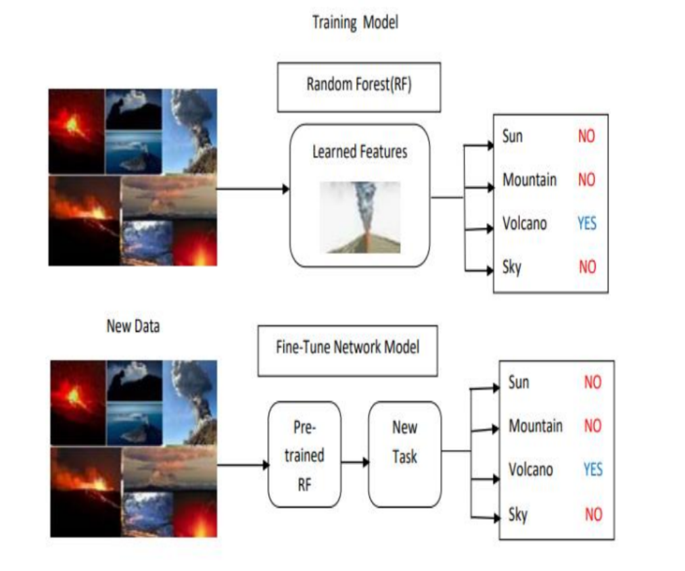

Volcanoes can impact humans and wildlife habitats.These volcano explosions can have local and global effects. It can also release various harmful gases and
people attacked to several health problems and there can be the impact of climatic changes. Accurate Volcano eruptions can reduce the effects and predicting
the eruption severity is a critical task. Through remote sensing, we can collect the data and train ML, and predict the Volcanoes active and inactive lava in India.
This predicted plot for color is included in API map Projections and we can also include the distance from the volcano to the ship. Supervised machine learning
algorithms are implemented on Volcanoes area data.

We are proposing a system to find the Volcano Hotspots using Machine Learning and Gis techniques for Ships. we have a lot of pictures where the volcano
areas surroundings are taken into consideration and this data is obtained from the GIS satellites. We have taken the Sentinal 5P as a reference satellite and obtained the
data attributes like latitude, longitude, atmosphere temperature , wind, humid etc are all taken as parameters.
The Machine Learning algorithm that we have used to train the model is Random Forest. The high-accuracy trained algorithm would be considered for model
development. The Ranking index would be more accurate. The volcano areas are predicted by the Machine and indicate the color of a plot in the location.
In the above figure describes the system architecture.Here we have a lot of pictures where the volcano areas surroundings are taken into consideration and this data is
obtained from the gas satellites. We have taken the Sentinal 5 precursor as a reference satellite and obtained the data attributes like latitude, longitude, atmosphere
temperature sun, mountain, volcano, sky etc. So the learning feature should know what type of attributes we are taken in to the consideration.
ROC curve,ROC curve shows the performance of a classification model at all classification thresholds. This curve plots two
parameters: The rate of true positives and false positives.ROC curve plotting TPR versus FPR at different classification thresholds. Lowering the
classification threshold classifies more items as positives, which increases False Positives and True Positives.
the Accuracy comparision graph. Accuracy is the term which is having more accurate values for the degree to which the value is more precise
to the prediction.We have done accuracy comparision for the data with the algorithms support vector machine,logistic regression,guassian process classifier
and Random forest.Among them the random algorithm has more accuracy with the data so we used the Random forest alorithm for predicting the volcanoes active or in
active state.
Now at the last we will see the output that shows the plotting of predicted volcanic hotspots in India. We are proposing the system to find
the Volcano Hotspots using Machine Learning and Gis techniques for Ships.
CONCLUSIONS:The volcano areas are predicted by the Machine and indicate the rank for the location. We classify Volcano
Eruptions and predict the volcanos and plot the color for Volcanos active and inactive lava in India. This ranking Index is included in API map Projections and we can
also include the distance from volcano hotspots on the API projection navigator will help in detecting the eruption.